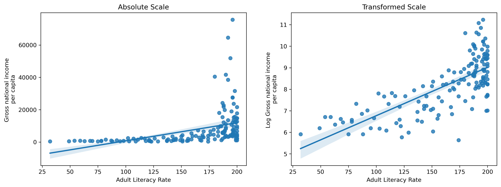
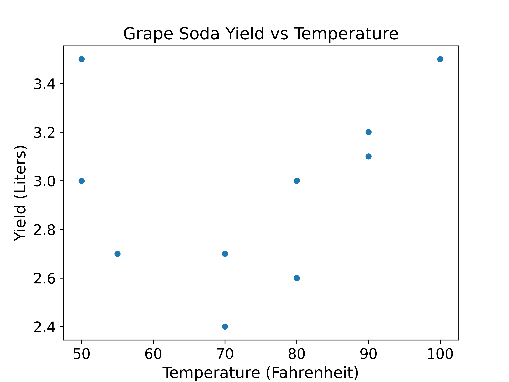
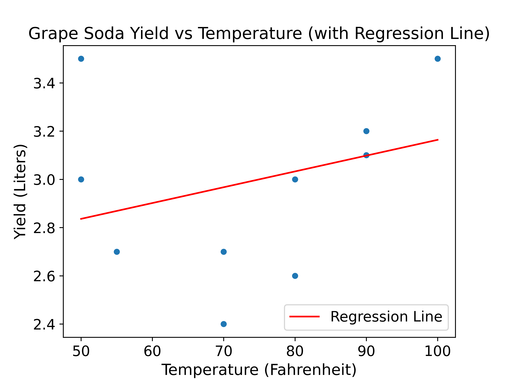

5 Transformations, Sampling, and SLR
5.1 Logarithmic Transformations
Ishani is a development economist interested in studying the relationship between literacy rates and gross national income in countries across the world. Originally, she plotted the data on a linear (absolute) scale, shown on the left. She noticed that the non-linear relationship between the variables with a lot of points clustered towards the larger values of literacy rate, so she consults the Tukey-Mosteller Bulge diagram and decides to do a \(\log_{10}\) transformation of the \(y\)-axis, shown on the right. The solid blue line is a “line of best fit” (we’ll formalize this later in the course).

5.1.1 (a)
Instead of using the \(\log_{10}\) transformation of the \(y\)-axis, what other transformations could Ishani have used to attempt to linearize the relationship between literacy rate (\(x\)) and gross national income per capita (\(y\)). Select all that apply.
A. \(\log_e(y)\)
B. \(10^y\)
C. \(\sqrt{x}\)
D. \(x^2\)
E. \(y^2\)
Answer
- \(\log_e(y)\), \(x^2\)
The original plot displays a very strong non-linear relationship that looks exponential. For large values of \(x\), and increase in \(x\) is matched with a very significant increase in \(y\). Therefore, we would want to apply a transformation that makes \(x\) values larger or \(y\) values smaller.
\(x^3\), \(\sqrt{y}\), and \(\log(y)\) are also valid as suggested by the Tukey-Mosteller Bulge Diagram.
5.1.2 (b)
Let \(C\) and \(k\) be some constant values and \(x\) and \(y\) represent literacy rate and gross national income per capita, respectively. Based on the plots, which of the following best describes the pattern seen in the data?
A. \(y = C + kx\)
B. \(y = C*10^{kx}\)
C. \(y = C + k\log_{10}(x)\)
D. \(y = Cx^k\)
Answer
- \(y = C*10^{kx}\)
The basic format of a regression line is \(y = kx + b\). Noticed that the plot on the right applied a log transformation to the \(y\) axis, so we can apply that same transformation to the equation to derive the true relationship.
\[\begin{align} \log_{10}(y) &= kx + b\\ y &= 10^{kx + b}\\ y &= 10^b*10^{kx} \end{align}\]
where \(C = 10^b\)
5.1.3 (c)
What parts of the plot could you use to make initial guesses on \(C\) and \(k\)?
Answer
\(C\): \(b\) is the y-intercept of the transformed plot, and \(C = 10^b\)
\(k\): Slope of the regression line in the transformed plot
5.1.4 (d)
Ishani’s friend, Yash, points to the solid line on the transformed plot and says “since this line is going up and to the right, we can say that, in general, the higher the literacy rate, the greater the gross national income per capita”. Is this a reasonable interpretation of the plot?
Answer
Yes, the observation is equivalent to saying that the slope is positive, which means increases in \(x\) correspond to increases in \(y\). This does not mean higher literacy rates cause higher gross national incomes, just that they are positively correlated.
5.1.5 (e)
Suppose that instead of plotting positive quantities, our data contained some zero and negative values. How can we reasonably apply a logarithmic transform to this data?
Answer
Recall that logarithms are not defined for 0 or negative values. Thus, we must first make all of our values positive. Suppose our data consists of three points, \([-3, -2, 4]\).
- Add the magnitude of the smallest number to each value to make all values non-negative: \([0, 1, 7]\)
- Add a small positive number to each value (e.g., \(1\)) to make all values positive: \([1, 2, 8]\)
Now, it is possible to take the logarithm of each value! Note that the steps above are merely shifting the data, they are not changing any underlying linear or non-linear relationships.
5.2 Data Collection through Sampling
It’s time for the Data 100 midterm, and the professors want to estimate the difficulty of the exam. They decided to survey students on the exam’s difficulty with a 10-point scale and then use the mean of the student’s responses as the estimate.
5.2.1 (a)
What is the population the professors are interested in trying to understand?
A. Students in Data 100
B. Students enrolled in the Data 100 Ed
C. Students who attend the Data 100 lectures
D. Students who took the Data 100 midterm
Answer
D. Students who took the Data 100 midterm
The professors are only interested in the students who actually took the midterm. Some students in the first three options might not have taken the midterm exam!
5.2.2 (b)
The professors consider a few different methods for collecting the survey data about the midterm. Which of the following methods is best? (think through which considerations go into “best”)
A. The professors add one Slido poll in the first lecture following the exam and only consider synchronous responses.
B. The professors add a question to the homework assignments of a simple random sample of students within every discussion section.
C. The professors make a post on Ed asking students to submit a Google Form containing the survey question.
D. The professors choose a simple random sample of discussion sections, go to each selected section and ask each student in the group as part of the final discussion question.
Answer
B. The professors add a question to the homework assignments of a simple random sample of students within every discussion section.
Although not perfect, B describes the best method out of the four! This method samples randomly from uniformly from students across discussion times, as well as providing strong incentive for students to answer. The only issue would be the fact that the sampling frame does not include students who don’t have a discussion section.
Here are reasons why the other options are not as good:
- A: Sample only from students who attend synchronously, introducing selection bias.
- C: Not all students check Ed periodically and the survey is optional, introducing selection bias and non-response bias.
- D: Room for social pressure, which can bias the results of the survey. Also, there may be systematic or inherent differences between discussion sections.
5.3 Simple Linear Regression
Lillian and Prabhleen were watching their favorite chemistry Youtuber NileRed experimenting with turning gloves into grape soda and wanted to try it themselves. The experiment was done at various temperatures and yielded various amounts of grape soda. Since this reaction is very costly, they were only able to do it 10 times. This data set of size \(n = 10\) (Yield data) contains measurements of yield from an experiment done at five different temperature levels. The variables are \(y\) = yield in liters and \(x\) = temperature in degrees Fahrenheit. Below is a scatter plot of our data. 
| \(\sigma_x\) | \(\sigma_y\) | \(r\) | \(\bar{x}\) | \(\bar{y}\) |
|---|---|---|---|---|
| 15 | 0.3 | 0.50 | 75.00 | 3 |
5.3.1 (a)
Given the above statistics, calculate the slope (\(\hat{\theta_1}\)) and y-intercept (\(\hat{\theta_0}\)) of the line of best fit using Mean Squared Error (MSE) as our loss function and plot the line on the graph above:
\[\begin{align*} y = \hat{\theta_0} + \hat{\theta_1}x \end{align*}\]
Answer
\[\begin{align*} \hat{\theta_1} &= r*\frac{\sigma_y}{\sigma_x}\\ \hat{\theta_1} &= 0.5*\frac{0.3}{15}\\ &= 0.01\\\\ \hat{\theta_0} &= \bar{y} - \hat{\theta_1}\bar{x}\\ \hat{\theta_0} &= 3 - 75.00 * 0.01\\ &= 3 - 0.75\\ &= 2.25 \end{align*}\]

Note that the \(\sigma_x\) and \(\sigma_y\) values in the table are slightly different from what can be seen in the plot in order to make the calculations easier! As a result, the slope and intercept values you obtained may also be slightly different from what you see in the plot.